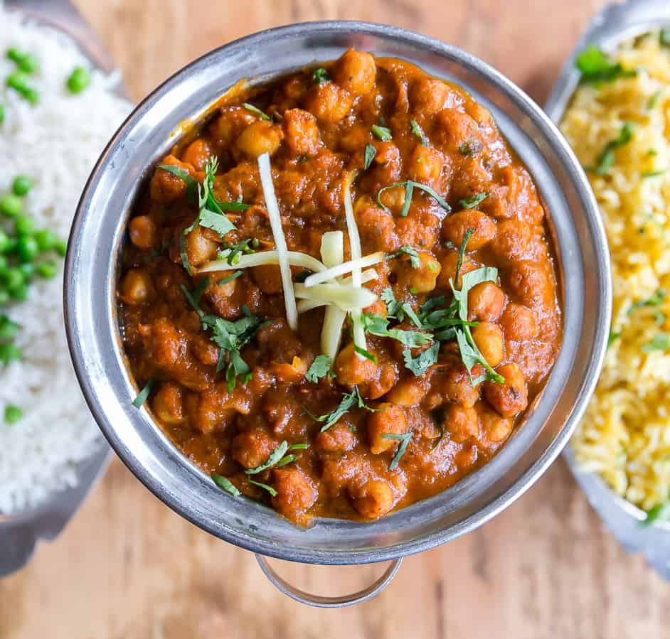

Home
Chana Masala(Chickpea Curry)

Description
A hearty, protein-rich curry made with chickpeas simmered in a spiced tomato-onion gravy. Perfect with rice or roti.
Ingredients
- 1½ cups cooked chickpeas (or 1 can, drained)
- 2 tbsp oil
- 1 onion (finely chopped)
- 2 tomatoes (chopped or pureed)
- 1 tsp ginger-garlic paste
- 1–2 green chilies (optional)
-
Spices:
- 1 tsp cumin seeds
- 1 tsp coriander powder
- ½ tsp turmeric
- 1 tsp garam masala
- 1 tsp cumin powder
- ½ tsp red chili powder (optional)
- Salt to taste
- Fresh cilantro (for garnish)
- Water as needed
Steps
- Heat oil in a pan, add cumin seeds and let them crackle.
- Add chopped onion, sauté until golden.
- Add ginger-garlic paste and green chilies, sauté 1–2 mins.
- Add tomatoes, cook until soft and oil separates.
- Add all dry spices (coriander, cumin, turmeric, chili powder, salt), cook 1–2 mins.
- Add cooked chickpeas and ½ to 1 cup water.
- Simmer for 10–12 minutes. Add garam masala and mix well.
- Garnish with cilantro. Serve hot.